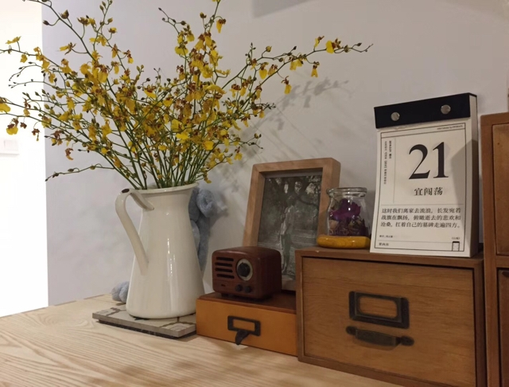
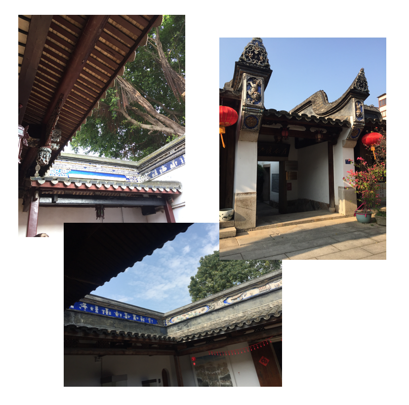

21，宜闯荡
我忘记父亲所说的话
我忘记母亲所说的话
整个城市充满了花
整个城市充满了雨

穿花过雨
在临北的福州
用力嗅出闽南之息
早春乔木茶 ^1
敞露相迎便自取自饮
麒麟弄无麒麟 ^2
吴馀桥疑吾 ^3
生死的一笔画

闽建筑装饰多工笔重彩墨
各处蓝绿斗拱和檐下彩绘可见

三坊七巷 ^4：人和房子各自摩肩接踵，往日城市的窒息

炮仗花应新年之景，或不可语冰

一路泡泡引群童相逐
拐卖小朋友的绝妙手段
<img src=”6.jpg” width=”50%” rotate=”90>
二维路灯
OS：真想找个墙缝钻进去啊，siu！
<img src=”7.jpg” width=”50%” rotate=”90>
来自时间、氧气和水的嘲讽：哲思艺术，无用之用，真无用也。
<img src=”8.jpg” width=”50%” rotate=”90>
吃货趣味

而饿最好吃 ^5
<img src=”10.jpg” width=”50%” rotate=”90>
茶酒牌事是入夜小调
<img src=”11.jpg” width=”50%” rotate=”90>
捕猫引发贵宾犬的不满
某相汪某无言
某时也是主权宣示 ^6
闽南味在地铁的报站音里
<img src=”12.jpg” width=”50%” rotate=”90>
衣冠南渡
围观者之围的
是木棺一席悬葬 ^7
骑在父亲肩脖上的孩子的奶音：
爸爸
我们也会死吗